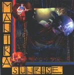

| Artist: | Mantra Sunrise |
| Title: | Mantra Sunrise |
| Label: | Tributary Music 222502-1 |
| Length(s): | 61 minutes |
| Year(s) of release: | 2001 |
| Month of review: | [02/2002] |
| 1) | Why | 4.34 |
| 2) | Time Of Year | 6.07 |
| 3) | Brudenell | 2.02 |
| 4) | Dying Day | 6.38 |
| 5) | Sleeping Whales | 5.12 |
| 6) | Northern Light | 4.42 |
| 7) | Your Heart Acoustic | 1.34 |
| 8) | Your Heart | 2.47 |
| 9) | Casino | 4.56 |
| 10) | Land Of Sprinagar | 19.41 |
| 11) | Mantra Sunset | 2.34 |
Tome Of Year is also a rather straightforward song with dreamy notes on acoustic guitar (lots of them actually), melodious and even featuring some keyboards. The three voiced vocals are very slow and seemingly unrelated. The electric guitar sound is again rather psychedelic and rather raw. The bass is strongly present, but the song does sound a bit too easy going at times. The effects are nice though.
Acoustic and dreamy also applies to Brudenell, and the playfulness of its melody works well. One might be tempted to think of Hackett here. Dying Day is in this sense more of the same, but has a stronger vocal melody. I have heard reviewers call the music on this album tensionless, but I do not feel it that way. In fact, a main reference here is The Doors with their dark sound.
On Sleeping Whales the vocals sound a bit off keyand the song tinkles along. Dreamy psyche (yes again), but also one might think of a song such as Twelfth Night's Love Song here. Later more tension and pace comes into the song with fast acoustic guitar, a sound similar to a cloud of insects.
Northern Lights has shards of Row Row Row Your Boat Gentle Down The Stream. For the rest, the style is the same, maybe even a bit more singer songwriter. After the Hackett-acoustic Your Heart (Acoustic) we move into the track itself. Ethereal and dreamily it progresses with hazily sung lyrics.
Casino is a moody and subtle with some wavery backing vocals, after which we come to the by far longest track on this album which is also the proggiest (hey surprise). The song enjoys a strong psyche feel like most of the album, but with more tension and sombre recitation. There is something of the staccato part of Led Zeppelins Kashmir in it (quite a popular one) and the drums are quite varied. Atmospherically this is a really strong track, influenced by the seventies and spun out over almost twenty minutes. Some of the lines on guitar have an Arabic sound to them. In total I felt the presence of Yes in this song, although the music is certainly less fickle. Although more varied than the previous tracks, it all progresses quite slowly. It is striking then that the music does not bore at all.
On the final track which opens sombrely, but ends on a lighter footing, I was reminded of Obscured By Clouds.